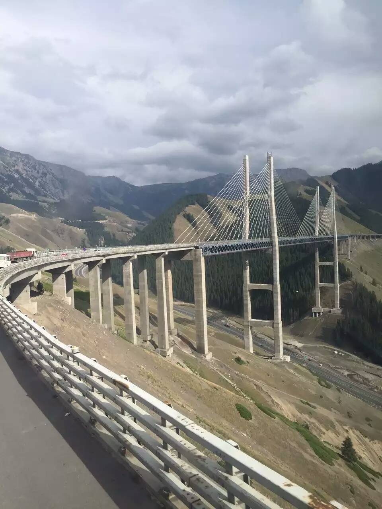
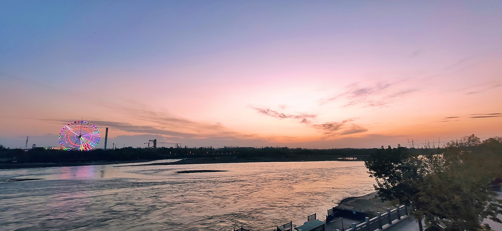
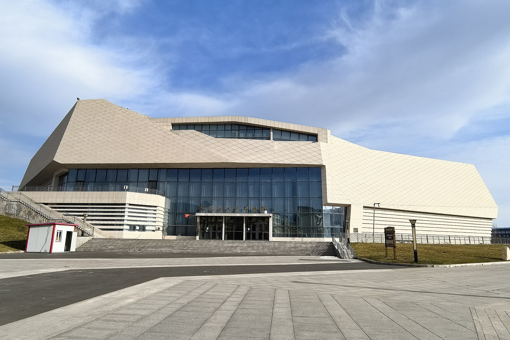
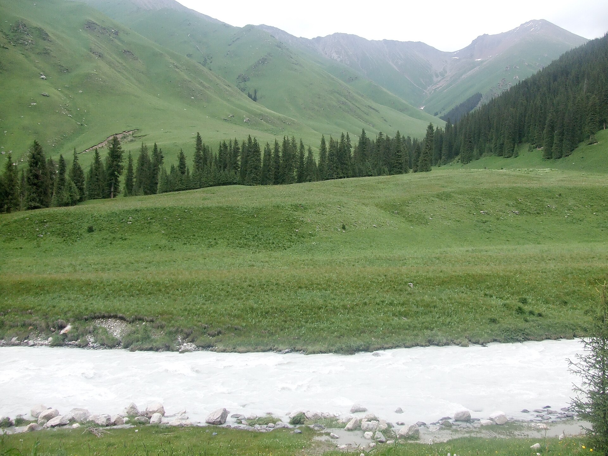
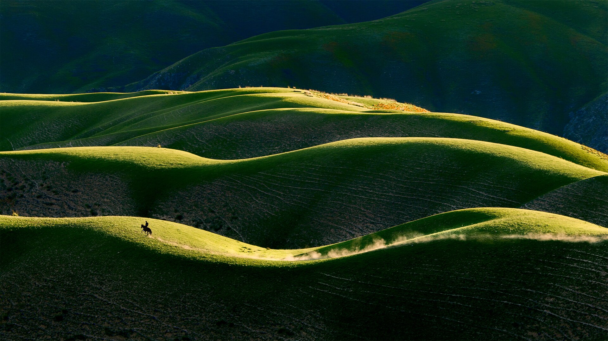
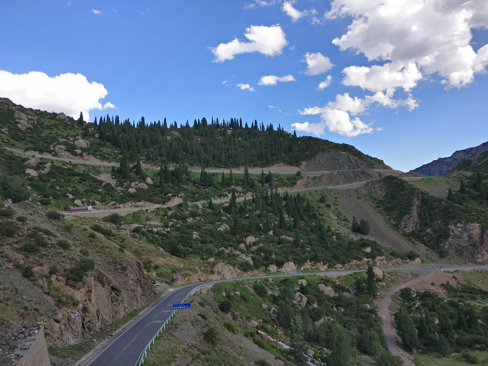

座位与行李
建议第二排坐两个大人或一大一小，第三排坐两个男孩或一大一小。每人控制 1 个 20-24 寸箱或软包，零食、水、冲锋衣放车内易取位置。
2026年7月19日-7月23日 | 乌鲁木齐往返 | 6人 MPV 混动车自驾
路线以赛里木湖、夏塔、那拉提、独库公路北段为主线。行程不追求打满所有小点，重点保证6人家庭出行的体力、驾驶安全、住宿稳定和景区体验。
| 日期 | 路线 | 住宿 | 强度 |
|---|---|---|---|
| 7月19日 | 乌鲁木齐 - 赛里木湖 - 果子沟大桥 - 清水河 | 清水河 | 长途+湖区 |
| 7月20日 | 清水河 - 伊宁喀赞其 - 天马浴河 - 昭苏 | 昭苏 | 中等偏满 |
| 7月21日 | 昭苏 - 夏塔 - 特克斯 | 特克斯 | 徒步日 |
| 7月22日 | 特克斯 - 那拉提 | 那拉提 | 草原游玩 |
| 7月23日 | 那拉提 - 独库公路北段 - 乌鲁木齐 | 返乌市 | 最长驾驶日 |


你们这次 3 个大人、2 个 13 岁男孩、1 个 18 岁男孩，领汇 M9 的 2+2+3 七座布局比较合适：第二排给长途乘坐舒适度，第三排给孩子或轻装乘客，后备厢用于集中放行李。
车辆配置以租车公司实际交付版本为准。提车时重点确认保险、续航显示、胎压、备胎/补胎工具、随车充电线、玻璃水和车身划痕。
建议第二排坐两个大人或一大一小，第三排坐两个男孩或一大一小。每人控制 1 个 20-24 寸箱或软包，零食、水、冲锋衣放车内易取位置。
这条线不建议把充电视为刚需。每天早上优先满油出发，清水河、昭苏、特克斯、那拉提县镇补油；山路前不要低油低电进入。
独库、夏塔、那拉提周边长下坡多，提前降速，避免频繁急刹。雨天、落石区、弯道和窄路不停车拍照，驾驶员每天至少轮换一次休息。
| 日期 | 预计里程 | 主要路况 | 建议补油点 | 驾驶提醒 |
|---|---|---|---|---|
| 7月19日 乌鲁木齐 - 赛里木湖 - 清水河 |
约610-650公里 | 以G30连霍高速为主，赛里木湖/果子沟段为景区道路和山谷道路。 | 乌鲁木齐满油出发；石河子、奎屯、精河/博乐方向服务区可补油；清水河镇到达后补满。 | 当天最长之一，重点防疲劳。果子沟大桥桥面不停车，服务区休息不要压缩。 |
| 7月20日 清水河 - 伊宁 - 昭苏 |
约240-290公里 | 清水河到伊宁路况较好；伊宁到昭苏若走伊昭公路，为季节性山路、弯多坡多。 | 清水河出发前补油；伊宁市区补给最稳；昭苏县城到达后补满。 | 伊昭公路如遇天气、事故或管制，按导航改走特克斯方向绕行，时间会增加。 |
| 7月21日 昭苏 - 夏塔 - 特克斯 |
约210-240公里 | 县道/景区道路为主，昭苏到夏塔路况整体可走，但景区附近车流和临停多。 | 昭苏县城满油出发；夏塔镇不作为主要补油点；晚上到特克斯县城补满。 | 夏塔游玩后容易疲劳，下午去特克斯不要赶夜路，雨天降低徒步和驾驶强度。 |
| 7月22日 特克斯 - 那拉提 |
约250-300公里 | 国省道+县城道路，沿途经巩留/新源方向，部分路段有区间测速和村镇穿行。 | 特克斯满油出发；巩留、新源县城可补油；那拉提镇入住前补满。 | 下午还要进那拉提景区，上午不要在特克斯停太久，路上遇慢车保持距离。 |
| 7月23日 那拉提 - 独库北段 - 乌鲁木齐 |
约540-600公里 | 独库北段为高海拔山路，弯道、长坡、落石区和临时管制风险高；出独山子后接高速返乌市。 | 那拉提镇必须满油出发；乔尔玛只作临时补给参考；独山子/奎屯再补油、吃饭、休整。 | 当天不要上午深玩那拉提。独库提前预约并当天复核通行，遇管制直接执行绕行方案。 |
| 景点/路段 | 参考费用 | 是否建议预约 | 预约/购票渠道 | 附近吃饭与补给 |
|---|---|---|---|---|
| 赛里木湖 | 门票约70元/人；区间车约60元/人；自驾套票公开参考约144元/人。 | 旺季建议提前1-3天预约。自驾进湖更要提前确认名额和入园口。 | 官方/景区小程序、主流票务平台；现场游客中心可购但旺季排队风险高。 | 景区内餐饮选择有限且价格偏高。建议乌鲁木齐出发前备路餐，午餐在服务区解决，晚餐到清水河镇吃。 |
| 果子沟大桥 | 路过观景为主，通常不单独收门票。 | 不需要预约。 | 无需购票；只需按导航到安全观景点，不要在桥面停车。 | 不建议在此安排正餐。清水河镇补油、买水、吃晚饭更稳。 |
| 喀赞其 / 伊宁老城 | 街区游览通常不按大景区门票处理；马车、家访、旅拍、演艺等单独收费。 | 普通逛街不强制预约；旺季如要马车/家访/旅拍，建议现场先问价再决定。 | 现场购买体验项目；也可在主流票务平台查套票。 | 伊宁市区补给最方便。午餐推荐抓饭、手抓肉、烤包子、酸奶、冰淇淋；同时补水、零食、防晒用品。 |
| 昭苏天马浴河 / 湿地公园 | 天马浴河表演公开信息显示不另收费，但需购买湿地公园门票和区间车；价格以当天购票页为准。 | 建议提前预约/购票，并当天确认表演场次。每场表演前会提前停止检票。 | “智游昭苏”官方渠道、昭苏景区购票入口或主流票务平台；咨询电话以景区当日公布为准。 | 建议伊宁午餐后出发，昭苏县城晚餐和补给。县城适合补油、买水、买第二天夏塔路餐。 |
| 夏塔景区 | 公开参考：成人门票+区间车合计约80元/人；学生、老人等优惠以身份证件和购票页为准。 | 必须提前实名预约/购票，旺季不建议现场碰运气。 | “智游昭苏”微信公众号/小程序，选择夏塔景区实名购票，凭二维码或身份证入园。 | 昭苏县城早餐和补给最稳。进夏塔前带水、能量棒、巧克力、雨衣；景区内餐饮和补给不要作为主要保障。 |
| 特克斯八卦城 | 县城街区游览通常不需要大门票；观景台、离街体验、航拍、民俗体验等另计。 | 不需要提前预约；如需观景台/演出/旅拍，现场确认价格。 | 现场购票或平台查单项体验。 | 特克斯县城适合晚餐、洗衣、补油和采购。建议补足第二天去那拉提路上的水和零食。 |
| 那拉提景区 | 门票挂牌价约95元/人；区间车按线路计费，公开参考：空中草原40元/人、盘龙谷道40元/人、河谷草原24元/人、天神台60元/人；自驾定制游公开参考约200元/人。 | 旺季建议提前预约。若计划自驾进景区，必须提前确认线路、名额和入园时段。 | 官方微信小程序“智游那拉提”实名预约购票，入园时出示动态电子凭证。 | 那拉提镇餐饮和补给较集中，午餐后进景区更稳。晚餐可在镇上解决，第二天返乌前必须补满油。 |
| 独库公路北段 | 公路通行本身不收门票；沿线停车、餐饮、景点另计。 | 需要。社会车辆提前1-7天预约，按预约日期、入口和时段通行。 | “游新疆一码游”小程序；“平安天山”“新疆交警”“新疆路网”“新疆发布”等公众号；石榴云、丝路视听客户端。 | 那拉提镇满油满水出发。乔尔玛可作临时补给，不作为正餐保障；独山子/奎屯适合午餐、补油和长时间休整。 |
| 费用项 | 估算口径 | 总费用估算 | 人均估算 | 备注 |
|---|---|---|---|---|
| 租车 含油费/电费 |
比亚迪领汇 M9 插混 MPV，按5天租车；全程约1850-2100公里，油费按混动MPV山路+高速综合消耗估算。 | 约5000-6500元 | 约833-1083元/人 | 以租车订单、保险、不计免赔、异地服务和实际油价为准。插混车不建议把充电作为刚需，主要按油费预算。 |
| 住宿 | 按2间房、4晚估算：清水河299、昭苏405、特克斯385、那拉提375，合计1464元/间。 | 约2928元 | 约488元/人 | 旺季价格会浮动。若改3间房，总住宿约4392元，人均约732元。 |
| 门票+区间车 | 按赛里木湖、夏塔、那拉提、昭苏湿地/天马浴河等主要项目成人价保守估算。 | 约2600-3200元 | 约433-533元/人 | 13岁男孩和18岁男孩如符合学生/未成年人优惠，实际会低一些。骑马、旅拍、二段交通不含在此项。 |
| 餐饮 | 日均人均100元，6人5天。 | 约3000元 | 约500元/人 | 新疆菜分量大，正餐少点多加更省。景区内餐饮偏贵，建议车上备路餐。 |
| 其他 | 过路费、停车费、景区小交通补差、骑马/旅拍/马车等体验项目。 | 约1800-3500元 | 约300-583元/人 | 体验项目弹性最大。骑马、旅拍、烤全羊、无人机跟拍等先问清价格和包含内容。 |
| 合计 | 按常规玩法，不含购物和突发维修/违章。 | 约15300-19100元 | 约2550-3183元/人 | 建议准备10%-15%机动金，即额外1500-2500元，应对旺季涨价、绕行和临时体验项目。 |
建议07:30前出发。当天路程长，午餐尽量在服务区快速解决，把时间留给赛里木湖。
避坑：果子沟大桥桥面不能停车拍照；赛里木湖风大，孩子不要长时间下水玩。
这天要兼顾城市民俗和昭苏表演，建议08:30出发，表演场次当天再确认。
避坑：不要压点赶表演。若当天赶不上，不建议等到太晚影响第二天夏塔。
当天核心是夏塔。以轻徒步看雪山草甸为主，不建议为靠近冰川长时间深入。
避坑：夏塔天气变化快，带冲锋衣、雨衣、徒步鞋。骑马和二段交通先问清价格。
上午离开特克斯，下午进入那拉提。景区很大，建议主打空中草原线。
避坑：不要一天硬塞空中草原、河谷草原、盘龙谷道三条线，6人家庭出行会很累。
这是最长驾驶日。必须早出发，提前确认独库预约、天气、施工和临时管制。
避坑：不要下午才从那拉提出发。独库部分入口晚间会限制社会车辆驶入，且山区天气和事故会造成临时管制。

第一天核心景点。湖面、草坡、雪山同框，适合环湖选择重点停车点拍照。建议停留3小时左右，别为了完整环湖拖到太晚。

赛里木湖去清水河途中顺路看。桥面不能停车，拍照必须到安全停车点或观景台，停留30-40分钟即可。

第二天轻松逛拍，适合体验伊宁城市风貌、民俗街区和小吃。建议控制在2小时内，不要影响下午赶往昭苏。

昭苏以天马文化和草原风光为主，表演场次以当天景区公布为准。若赶不上场次，不建议等太晚影响第二天夏塔。

第三天重点。适合看雪山、草甸、河谷，体力消耗比普通景点大。6人家庭建议轻徒步，不追求走到最深处。
停留建议：5-6小时。带雨衣、冲锋衣、徒步鞋、能量棒。

作为第三晚中转和补给点，晚上逛中心街即可。若想看八卦城整体格局，可选择观景点或航拍服务，但不要挤占第二天去那拉提时间。

第四天主打景点。时间有限时优先空中草原线，体验草原、森林、雪山和牧场层次，不建议同日多线打卡。

返程核心体验，也是风险最高的一段。美景在路上，但不要在弯道、窄路、落石区停车拍照。当天以安全返乌鲁木齐为第一目标。
执行原则：提前预约、早出发、满油、双司机轮换。
伊宁、特克斯优先安排，适合午餐正餐。
长途日稳妥选择，出餐快、分量足。
晚上少量加餐可以，别影响第二天山路和徒步。
喀赞其适合轻松体验，注意孩子肠胃。
| 日期 | 地点 | 参考酒店 | 订房重点 |
|---|---|---|---|
| 7月19日 | 清水河 | 清禾客栈或同级 | 停车位、晚到保留、热水、空调 |
| 7月20日 | 昭苏 | 星程酒店或县城连锁 | 县城内更稳，吃饭、补给、加油方便 |
| 7月21日 | 特克斯 | 瞻德酒店或同级 | 靠近县城中心，晚上吃饭方便 |
| 7月22日 | 那拉提 | 红树湾或同级 | 离景区入口近，确认停车和热水 |
6个人建议订3间双床房，比2间房更利于休息。旺季优先订可取消房，入住前一天电话确认。
酒店图片来自公开预订平台页面，可能随平台更新变化；订房前仍需按实际门店、日期、房型、停车和取消规则复核。
优先7座及以下 MPV 混动车。提车时拍完整视频，记录车身、轮胎、轮毂、玻璃、内饰、油电量。确认不计免赔、轮胎玻璃、异地救援范围。
每天出发前检查胎压和续航。独库、伊昭、夏塔周边不激烈驾驶，不在弯道和窄路停车。至少保持半箱油。
若7月23日独库北段临时管制，改走可通行国省道和高速绕返乌鲁木齐。时间会明显增加，当天要接受晚到。
两个13岁男孩和18岁男孩都能适应常规游玩，但夏塔、那拉提不要连续高强度徒步。车上备晕车药、能量食品和保暖衣物。
| 事项 | 确认时间 | 标准 |
|---|---|---|
| 独库公路北段预约与通行 | 7月22日晚、7月23日早 | 看官方通告、天气、施工、限流 |
| 那拉提门票和区间车 | 7月21日或7月22日上午 | 确认空中草原线余票和进场时间 |
| 夏塔天气 | 7月20日晚、7月21日早 | 雨天降级为轻徒步，不深入 |
| 酒店订单 | 每天上午 | 电话确认保留房间、停车、热水 |
| 车辆状态 | 每天出发前 | 油电、胎压、导航、饮水、路餐 |